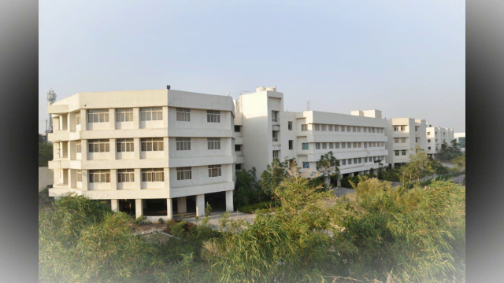

Marathwada Mitra Mandal's Institute of Technology (MMIT) is one of the leading engineering institutions in Maharashtra, dedicated to academic excellence, innovation, and industry-ready education. Established with a vision to provide quality technical education, MMIT has been nurturing bright minds and developing skilled professionals since its inception.
With state-of-the-art infrastructure, experienced faculty, and active industry collaborations, MMIT offers a vibrant and holistic learning environment. The institute promotes a culture of research, innovation, and inclusiveness to develop future-ready engineers and leaders.